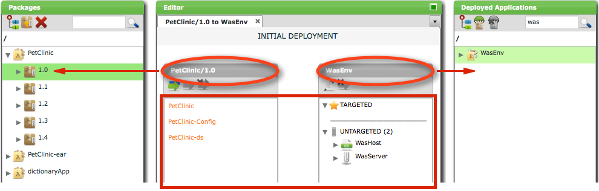
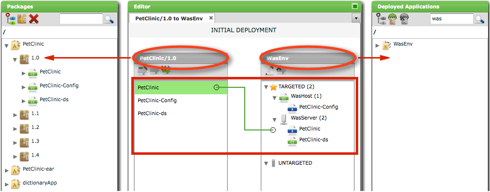
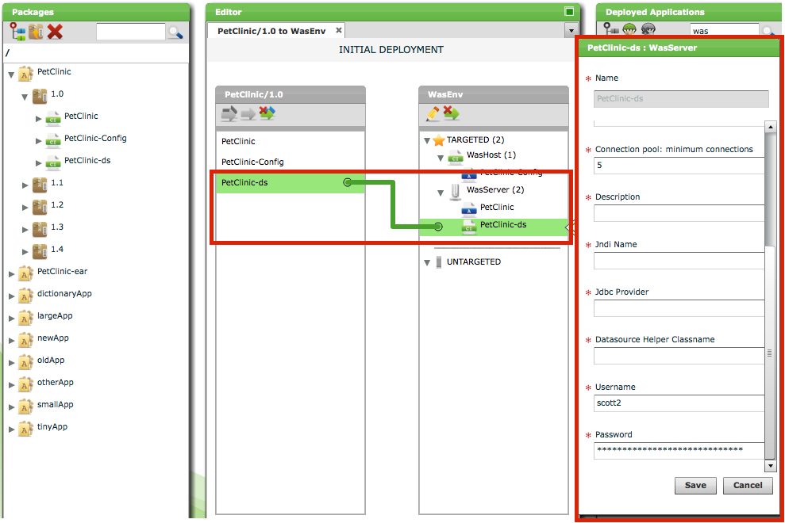
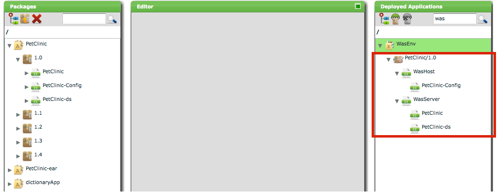

This manual contains reference information for users of Deployit.
Deployit is the first out-of-the-box deployment automation solution that allows non-experts to perform application deployments. A deployment consists of all the actions needed to install, configure and start an application on a target environment.
At a high level, deployments in Deployit are modeled using the Unified Deployment Model (UDM). The following diagram depicts the main concepts in the UDM as they appear in the Deployit GUI:

Deployments are defined by:
Of course, packages and environments are made up of smaller parts:
Deployables come in two flavors: artifacts are physical files (examples are an EAR file, a WAR file or a folder of static HTML) and resource specifications are middleware resources that the application needs to run (examples are a queue, a topic or a datasource). These types of deployables are put together in a package.
Containers are actual middleware products that deployables are deployed to. Examples of containers are an application server such as Tomcat or WebSphere, a database server, or a WebSphere node or cell.
Let's say we have a package that consists of an EAR file (an artifact), a datasource (a resource specification) and some configuration files (artifacts) and we want to deploy this package to an environment containing an application server and a host (both containers). The exact deployment could look something like this:

In the above picture, you can see that the EAR file and the datasource are deployed to the application server and the configuration files are deployed to the host.
As you can see above, the deployment also consists of smaller parts. The combination of a particular deployable and container is called a deployed. Deployeds represent the deployable on the container and contain customizations for this specific deployable - container combination. For example, the PetClinic-ds deployed in the picture represents the datasource from the deployment package as it will be deployed to the was.Server container. The deployed allows a number of properties to be specified:

For example, the deployed has a specific username and password that may be different when deploying the same datasource to another server.
Once a deployment is specified and configured using the concepts above (and the what, where and customizations are known), Deployit takes care of the how by preparing a list of steps that need to be executed to perform the actual deployment. Each step specifies one action to be taken, such as copying of a file, modifying a configuration file or restarting a server.
When the deployment is started, Deployit creates a task to perform the deployment. The task is an independent process running on the Deployit server. The steps are executed sequentially and the deployment is finished successfully when all steps have been executed. If an error occurs during deployment, the deployment stops and an operator is required to intervene.
The result of the deployment is stored in Deployit as a deployed application and is shown in the Deployed Application Browser on the right hand side of the GUI. The deployed applications are organised by environment so it is clear where the application is deployed to. It is also possible to see which parts of the deployed package have been deployed to which environment member.
The final result of our sample deployment looks like this:

There are two ways of interacting with Deployit and each is intended for a specific audience.
Performing tasks interactively is possible using the Graphical User Interface (GUI). The GUI is a Flash application running inside a browser. After logging in, the user can configure and perform deployments; view the release pipeline of the different applications; view and edit the repository; view reports; and view or edit security settings. (Provided that the user has proepr access to these components of course) See the Deployit Graphical User Interface (GUI) manual for more information.
The Command Line Interface (CLI) is used to automate Deployit tasks. The CLI is a Jython application that the user can access remotely. In addition to configuring and performing deployments, the user can also setup middleware in the CLI. In general, the CLI is used to perform administrative tasks or automate deployment tasks. See the Deployit Command Line Interface (CLI) manual for more information.
Please note that Deployit's security system is applied to all user actions, regardless of whether they are performed in the GUI or from the CLI.
These are the main concepts in Deployit, in alphabetical order.
Artifacts are files containing application resources such as code or images. The following are examples of artifacts:
The Deployit CLI provides a way to programmatically interact with Deployit. The CLI can be programmed using the Python programming language. For more detailed information, see the Deployit Command Line Interface Manual.
Composite packages are deployment packages that have other deployment packages as members. Composite packages can not be imported, but are created inside of Deployit using other packages that are also in the Deployit repository. Deploying a composite package works the same as deploying a regular package. Note that Deployit has a composite package orchestrator that ensures that the deployment is carried out according to the ordering of the composite package members.
A typical use case for composite packages is to compose a release of an application that consists of components that are delivered by separate teams.
Control tasks are actions that can be performed on middleware or middleware resources.
Control tasks are defined on a particular type and can be executed on a specific instance of that type. When a control task is invoked, Deployit starts a task that executes the steps associated with the control task. Deployit users can use them to interact directly with the underlying middleware. An example of a control task is starting or stopping of an Apache webserver.
Control tasks can be defined in Java or XML (see the Customization Manual) or using scripts (see the Generic Model Plugin Manual).
A configuration item (CI) is a generic term that describes all objects that Deployit keeps track of. Applications, middleware, environments and deployments in Deployit are all represented in Deployit as CIs. A CI has a certain type that determines what information it contains and what it can be used for. CIs have properties to describe it and may have relations to other CIs.
Deployit CIs all share one property:
Some properties of a CI are mandatory. To determine which properties are available and which are mandatory or optional for a CI, see the CI Reference section in this document, the plugin manual for the plugin that provides the CI, or use the help facility in the Deployit CLI.
For example, a CI of type udm.DeploymentPackage represents a deployment package. It has properties containing its version number. It contains child CIs for the artifacts and resource specifications it contains and has a link to a parent CI of type udm.Application which describes which application the package is a part of.
Containers are configuration items (CIs) that deployable CIs can be deployed to. Containers are grouped together in an environment. Examples of containers are a host, WebSphere server or WebLogic cluster.
Deployables are configuration items (CIs) that can be deployed to a container. Deployables are part of a deployment package. Deployables come in two forms: artifacts (for instance, EAR files) and specifications (for instance, a datasource).
Deployeds are configuration items (CIs) that represent deployable CIs in their deployed form on the target container. The deployed CI specifies settings that are relevant for the CI on the container.
For example, a wls.Ear deployable is deployed to a wls.Server container, resulting in a wls.EarModule deployed.
Another example is a wls.DataSourceSpec that is deployed to a wls.Server container, resulting in a wls.DataSource deployed. The wls.DataSource is configured with the database username and password that are required to connect to the database from this particular server.
Deployeds go through the following life-cycle:
This process installs a particular application version (represented by a deployment package) on an environment. Deployit copies all necessary files and makes all configuration changes to the target middleware that are necessary for the application to run.
The DAR format is the native format Deployit supports for deployment packages. A DAR file is a standard ZIP file with additional metadata information contained in a manifest. For a comprehensive description of the DAR format, see the Deployit Packaging Manual.
In the Unified Deployment Model, a particular version of an application (consisting of both artifacts and resource specifications) is contained in a single deployment package. The package contains all deployables that the application needs. The package is environment-independent and can be deployed to any environment unchanged (see the Unified Deployment Model).
Deployit accepts packages in the Deployment ARchive (DAR) format.
A dictionary is a CI that contains environment-specific entries for placeholder resolution. Entries can be added in the GUI or using the CLI. This allows the deployment package to remain environment-independent so it can be deployed unchanged to multiple environments.
For an example of using placeholders in CI properties, see the Deployit Packaging Manual.
A directory is a CI used for grouping other CIs. Directories exist directly below the repository root nodes and may be nested. Directories are also used to group security settings.
For example, you could create the directories Administrative, Web and Financial under the Applications node to group the available applications in these categories.
An environment is a grouping of infrastructure items, such as hosts, servers, clusters, etc. Environments can contain any combination of infrastructure items that are used in your situation. An environment is used as the target of a deployment, allowing deployables to be mapped to members of the environment.
An orchestrators in Deployit combines the steps for the individual component changes into an overall deployment workflow. The default orchestrator "interleaves" all individual component changes by running all steps of a given order for all components (see steplist for an explanation of step order). This results in an overall workflow that first stops all containers, then removes all old components, then adds the new ones etc.
In addition to the default orchestrator, Deployit also ships with:
See the Customization Manual for more information on creating a custom orchestrator.
Placeholders are configurable entries in your application that will be set to an actual value at deployment time. This allows the deployment package to be environment-independent and thus reusable.
There are two types of placeholders. File placeholders occur inside of artifacts in the deployment package. Deployit scans packages that it imports for text files and searches these text files for file placeholders. The following items are scanned:
Before a deployment can be performed, a value must be specified for all file placeholders in the deployment.
Property placeholders are used in CI properties by specifying them in the package's manifest. In contrast to file placeholders, property placeholders do not necessarily need to have a value from a dictionary. If the placeholder can not be resolved from a dictionary, the placeholder is left as-is.
Deployit recognizes placeholders using the following format:
{{PLACEHOLDER_KEY}}
Values for placeholders can be provided manually or filled in from a dictionary.
There are two special placeholder values:
A plugin is a self-contained piece of functionality that adds capabilities to the Deployit system. Plugins are packaged in a JAR file and installed in Deployit's plugins directory. Plugins can contain:
Deployit's database is called the repository. It stpres all configuration items (CIs), binary files (such as deployment packages) and Deployit's security configuration (user accounts and rights). The repository can be stored on disk (default) or in a relational database (see Configuring Database Storage in the System Administration Manual).
Each CI in Deployit has an id that uniquely identifies the CI. This id is a path that determines the place of the CI in the repository. For instance, a CI with id "Applications/PetClinic/1.0" will appear in the PetClinic subfolder under the /Applications root folder.
The repository has a hierarchical layout and a version history. All CIs of all types are stored here. The top-level folders indicate the type of CI stored below it. Depending on the type of CI, the repository stores it under a particular folder:
The repository acts as a version control system, that is, every change to every object in the repository is logged and stored. This makes it possible to compare a history of all changes to every CI in the repository. Deployit also retains the history of all changes to deleted CIs. Even if a CI is deleted, the storage it uses will not be freed up so that it is possible to retrieve the CI as it existed before the deletion. See the System Administration Manual for more information about managing the repository.
Deployit's repository contains CIs that refer to other CIs. There are two ways in which CIs can refer to each other:
A deployed application is the result of deploying a deployment package to an environment. Deployed applications have a special structure in the repository. While performing the deployment, package members are installed as deployed items on individual environment members. In the repository, the deployed application CI is stored under the Environment node. Each of the deployed items are stored under the infrastructure members in the Infrastructure node.
So, deployed applications exist in both the /Environment as well as /Infrastructure folder. This has some consequences for the security setup. See the Deployit System Administration Manual for details.
Resource specifications are specifications of middleware resources that an application needs to run. The following are examples of these resources:
Roles are functional groups of principals (security users or groups) that are assigned a common set of permissions. In Deployit, permissions can only be assigned to roles. Roles are created and mapped to principals in Deployit itself, offering an additional layer of abstraction to the backend user store.
Deployit supports a fine-grained access control scheme to ensure the security of your middleware and deployments. The security mechanism is based on the concepts of principals and permissions. A (security) principal is an entity that can be authenticated and that can be assigned rights over resources in Deployit. Principals are assigned certain permissions within the system. These permissions can be either global (that is, they apply to all of Deployit, such as login permission) or relevant for a particular CI or set of CIs (for instance, the permission to read certain CIs in the repository).
The security system uses the same permissions whether the system is accessed via the GUI or the CLI.
For more information about Deployit's security system, see the System Administration Manual.
A step is a concrete action to be performed to accomplish a task. Steps are contributed by plug-ins based on the deployment that is being performed. All steps for a particular deployment are grouped together in a steplist. Deployit ships with many step implementations for common actions. Other, middleware-specific steps are contributed by the plugins.
The following are examples of steps:
A steplist is a sequential list of steps that are contributed by one or more plugins when a deployment is being planned.
All steps in a steplist are ordered in a manner similar to /etc/init.d scripts in Unix, with low-order steps being executed before higher-order steps. Deployit predefines the following orders for ease of use:
Tags make it easier to configure deployments by marking which deployables should be mapped to which containers.
To perform a deployment using tags, specify tags on the deployables and containers. Tags can be specified either in the imported package or by using the repository browser. When deploying a package to an environment, Deployit will map deployables to containers that have at least one tag in common. If either the deployable or container has a tag, deployeds are only generated when at least one tag matches. A deployed is always generated if either the deployable or container doesn't have a tag.
An example scenario is deploying a front-end and back-end application to two application servers. By tagging the front-end EAR and front-end application server both with 'FE' and the back-end EAR and back-end server with 'BE', Deployit will automatically create the correct deployeds.
A task is an activity in Deployit. When starting a deployment, Deployit will create and start a task. The task contains a list of steps that must be executed to successfully complete the task. Deployit will execute each of the steps in turn. When all of the steps are successfully executed, the task itself is successfully executed. If one of the steps fails, the task itself is marked stopped.
Deployit supports the following types of tasks:
Deployit periodically stores a snapshot of the tasks in the system to be able to recover tasks if the server is stopped abruptly. Deployit will reload the tasks from the recovery file when it restarts. The tasks, deployed item configurations and generated steps will all be recovered. Tasks that were running in Deployit when the server stopped will be put in 'stopped' state so the user can decide whether to rerun or cancel it. Only tasks that have been started will be recovered.
When a task is started, Deployit schedules the task for immediate execution. Depending on the number of active tasks, the task may be executed immediately or it may be queued, waiting for an execution spot to open up. In the latter case, the task will be shown as QUEUED in the Deployit GUI.
Deployit allows a user to interact with the task. A user can:
Deployit features a configurable type system that allows modification and addition of CI types. This makes it possible to extend your installation of Deployit with new types or change existing types. Types defined in this manner are referred to as synthetic types. The type system is configured using XML files called synthetic.xml. All files containing synthetic types are read when the Deployit server starts and are available in the system afterwards.
Synthetic types are first-class citizens in Deployit and can be used in the same way that the built-in types are used. This means they can be included in deployment packages, used to specify your middleware topology and used to define and execute deployments. Synthetic types can also be edited in the Deployit GUI, including new types and added properties.
For more information about extending Deployit, see the Customization Manual.
This process removes a deployed application from an environment. Deployit stops the application and undeploys all its components from the target middleware.
The UDM is XebiaLabs' model for describing deployments and is used in Deployit. The UDM consists of the following components:
This process replaces an application deployed to an environment with another version of the same application. When performing an upgrade, most deployeds can be inherited from the initial deployment. Deployit recognizes which artifacts in the deployment package have changed and deploys only the changed artifacts.